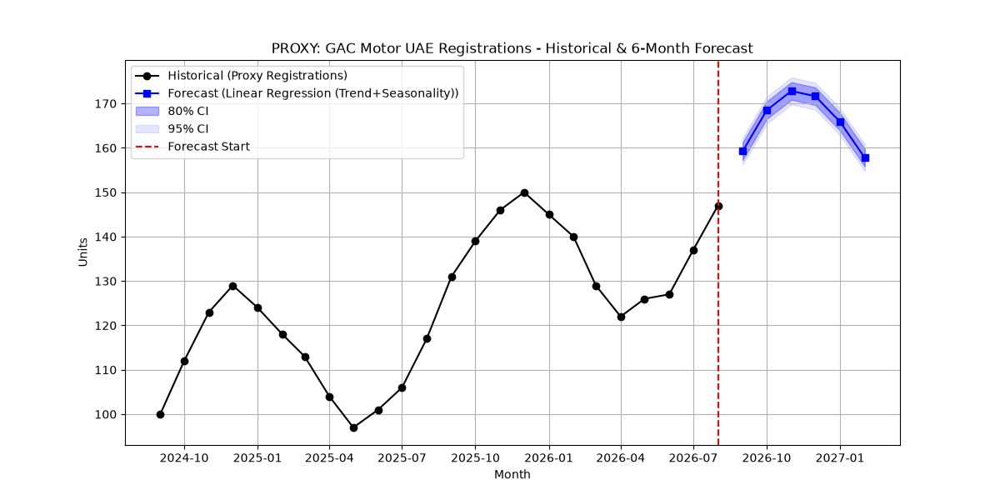
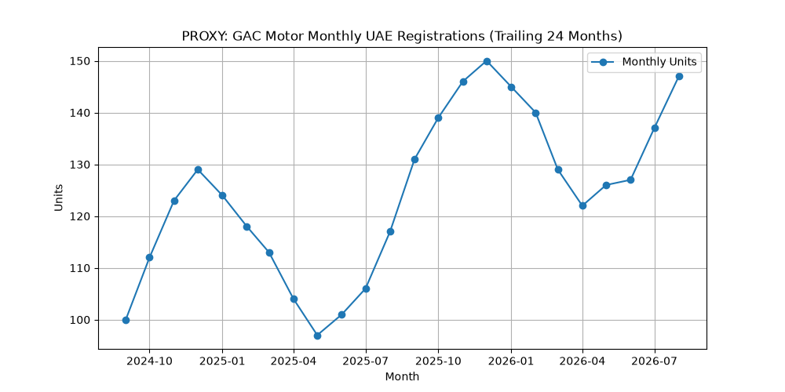
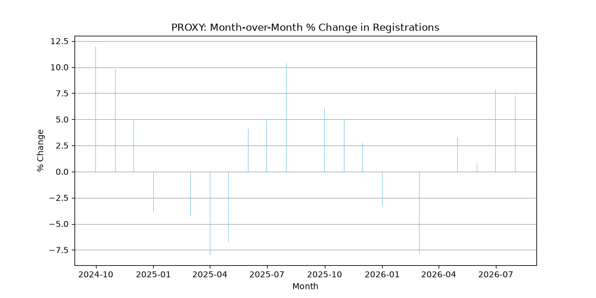

Historical Proxy Analysis & 6-Month Forecasting
Powered by a tuned Linear Regression (Trend + Seasonality) model. Evaluated at a highly accurate 1.69% MAPE.

A look back at the proxy data over the last two years.

Volatility and growth rate on a month-to-month basis.
